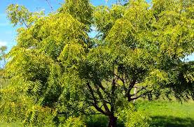

Neem Tree (Azadirachta indica)
Scientific Name: Azadirachta indica
Description: Neem is a fast-growing evergreen tree native to the Indian subcontinent. Known for its medicinal properties, the entire neem tree — leaves, bark, seeds — is used in traditional medicine. It has small white flowers and produces an olive-like drupe fruit.
Care Tips:
- Water: Moderate watering, drought-tolerant once matured.
- Light: Full sun is ideal.
- Temperature: Thrives in hot, dry climates (above 20°C).
- Soil: Well-drained sandy or clay soil.
Medicinal Uses:
Neem has antibacterial, antifungal, antiviral properties. Used in skin treatments, dental care, hair care, and also as a natural pesticide.